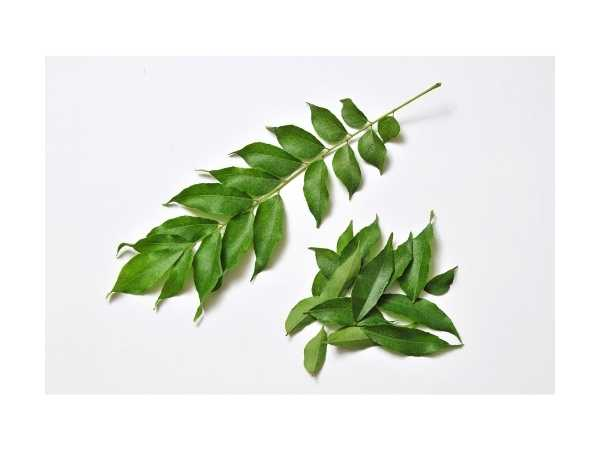

Murraya koenigii
Common Names: Curry Leaf, Sweet Neem, Curry Tree
Local Name: Karuveppilai (Tamil), Kadi Patta (Hindi), Karivepaku (Telugu)
Family: Rutaceae
Origin: India and Sri Lanka; native to the Indian subcontinent
Plant Type: Small tree / shrub, 4–6 meters
Variety: Regular (Murraya koenigii), Dwarf (Gamthi — highly aromatic, slow-growing)
Average Lifespan: 15–25 years; can live longer with good care
| Growth Habit | Semi-deciduous small tree or large shrub; multi-stemmed with spreading canopy |
| Plant Size | 4–6 meters tall; dwarf varieties stay under 2 meters |
| Leaves | Pinnately compound, 11–21 leaflets per leaf, each 2–4 cm long, highly aromatic when crushed |
| Flowers | Small, white, fragrant, in terminal corymbose cymes; 5-petaled, star-shaped |
| Flower Characteristics | Sweetly fragrant; attracts bees and butterflies; self-fertile |
| Fruit | Small berries, 1–1.2 cm diameter; edible sweet pulp; single large seed |
| Fruit Color | Green turning glossy black when ripe |
| Seed Characteristics | Single large seed per berry; viable for short period; must be sown fresh |
| Root System | Strong taproot with lateral spreading roots; produces root suckers freely |
| Climate | Tropical to warm subtropical; tolerates heat well; frost-sensitive |
| Temperature Range | 20–37°C ideal; tolerates up to 45°C; damaged below 5°C |
| Rainfall Requirement | 600–1600 mm annually; drought-tolerant once established |
| Soil Type | Well-drained loamy to sandy loam; tolerates poor soils; avoid waterlogging |
| Soil pH Preference | 6.0–7.0 (slightly acidic to neutral) |
| Sun Requirement | Full sun (6+ hours daily); tolerates partial shade but best aroma in full sun |
| Spacing | 3–4 meters for trees; 1.5–2 meters for hedge planting |
| Irrigation Method | Drip or basin irrigation; water deeply but infrequently once established |
| Water Requirement | Low to moderate; drought-tolerant; overwatering causes root rot |
| Can it Grow in Pots? | Yes, excellent in pots (15–30 liters); dwarf Gamthi variety ideal for containers |
| Fertilizer Schedule | Every 4–6 weeks during growing season (spring–autumn); reduce in winter |
| Recommended Organic Fertilizers | Buttermilk dilution (traditional), FYM, vermicompost, seaweed extract, iron-rich supplements |
| Pesticide Frequency | Monitor monthly; treat as needed; generally low pest pressure |
| Recommended Organic Pesticides | Neem oil for scale and psyllids; soap spray for aphids; Beauveria bassiana for caterpillars |
| Mulching Practice | Light organic mulch; keep mulch away from trunk to prevent collar rot |
| Training System | Single trunk or multi-stem bush; can be maintained as hedge with regular harvesting |
| Pruning Time | Spring (March–April); regular leaf harvesting acts as pruning |
| How to Prune | Pinch growing tips for bushier growth; cut back leggy branches; remove flower buds to promote leaf growth |
| Common Pests | Citrus psyllid, scale insects, leaf-eating caterpillars, aphids |
| Common Diseases | Leaf spot, powdery mildew, root rot (in waterlogged soil), iron chlorosis |
| Disease Prevention & Remedies | Good drainage, avoid overhead watering, iron supplements for yellowing leaves, neem oil spray |
| Flowering Months | April–June (South India); spring in subtropical regions |
| Fruiting Season | July–September; berries ripen 2–3 months after flowering |
| Days to Harvest | Leaves harvestable year-round from 1st year; berries 60–90 days after flowering |
| Harvest Indicators | Harvest mature dark green leaves; pick entire sprigs; berries turn glossy black when ripe |
| Average Yield per Plant | 2–5 kg fresh leaves per year (mature tree); continuous harvest possible |
| Pollination Type | Self-pollination; also insect-pollinated |
| Pollination Notes | Bees and butterflies visit flowers; self-fertile; fruits set readily |
| Pollination Details | Self-fertile; cross-pollination by insects enhances fruit set |
| Propagation by Seeds | Fresh ripe berries (remove pulp); sow immediately; germinates in 15–30 days; slow initial growth |
| Propagation by Cuttings | Semi-hardwood cuttings possible but difficult; root suckers are easier and more reliable |
| Propagation by Grafting | Not commonly practiced; root sucker division is the preferred vegetative method |
| Water Usage | Low; highly drought-tolerant once established |
| Soil Conservation Practices | Deep root system stabilizes soil; leaf litter enriches topsoil |
| Organic Practices Used | Naturally low-input crop; buttermilk feeding is a traditional organic practice |
| Companion Plants | Moringa, drumstick, coconut (as overstory); chillies, tomatoes nearby |
| Biodiversity Benefits | Flowers attract pollinators; berries eaten by birds; supports urban biodiversity |
| Commercial Production Regions | Tamil Nadu, Karnataka, Andhra Pradesh (India); Sri Lanka; grown in home gardens worldwide |
| Market Uses | Fresh leaves (bundles), dried curry leaves, curry leaf powder, essential oil |
| Processing Uses | Dried and powdered for spice blends, essential oil extraction, hair oil infusions |
| Market Value (Approx.) | ₹20–80 per bundle (fresh); ₹300–600 per kg (dried); plants ₹100–500 each |
| Symbolism | Indispensable in South Indian kitchens; no tempering (tadka) is complete without curry leaves |
| Traditional Uses | Used in Ayurveda and Siddha medicine for centuries; leaves chewed for oral health; hair care ingredient in traditional oil preparations |
| Calories | 108 kcal per 100g (fresh leaves) |
| Dietary Fiber | 6.4 g per 100g |
| Vitamin C | 4 mg per 100g |
| Vitamin A | 12,600 IU per 100g (extremely rich) |
| Iron | 0.93 mg per 100g |
| Potassium | Significant amounts; supports electrolyte balance |
| Antioxidants | Rich in carbazole alkaloids (mahanimbine, girinimbine), carotenoids, tocopherols |
| Other Key Nutrients | Calcium (830 mg/100g), phosphorus, folic acid, essential oils |
| Anxiety & Sleep | Aromatic compounds have mild calming properties; used in traditional aromatherapy |
| Immune Support | Rich in antioxidants and vitamin A; carbazole alkaloids have antimicrobial properties |
| Anti-inflammatory Properties | Carbazole alkaloids show anti-inflammatory and anti-tumor activity in research |
| Heart Health | May help reduce LDL cholesterol; traditional use for managing blood sugar levels |
| Digestive Health | Stimulates digestive enzymes; anti-diarrheal properties; traditionally eaten raw on empty stomach |
Disclaimer: Information provided is for educational purposes only and not a substitute for medical advice.
Add your field observations here.